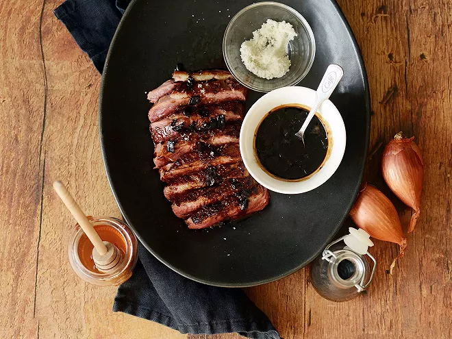

Magret de Canard au miel et vinaigre

Description
Emblème de la cuisine du Sud-Ouest, le magret de canard est, contrairement au filet classique, tiré du canard gras. Il est ainsi entouré d'une épaisse couche de graisse sur laquelle on démarre toujours la cuisson. Ici, nous vous proposons une recette parfaite pour les fêtes de fin d'année : un magret de canard nappé d’une sauce au miel et au vinaigre balsamique qui lui font prendre des notes sucrées-salées. Croyez-nous c'est un délice !
Ingrédients
- 1 Magret de canard
- 3 échalotes
- 5cl de vinaigre balsamique
- 1c. à soupe de miel
- sel
- Poivre
Étapes
- Retirez l'excès de gras sur le côté du magret mais laissez la graisse de canard sur le dessus. À l’aide d’un couteau de cuisine bien aiguisé, réalisez des entailles en forme de croisillons dans la peau du canard jusqu’à la chair. Salez et poivrez.
- Faites chauffer une grande poêle antiadhésive sans matière grasse. Lorsqu’elle est bien chaude, déposez-y le magret côté peau. Laissez-le cuire entre 5 et 10 min en arrosant la chair avec le gras fondu. Retirez du feu.
- Videz l’excès de graisse et remettez la viande dans la poêle, côté chair cette fois-ci. Poursuivez la cuisson du magret pendant 5 min environ. Retirez-le du feu et réservez-le au chaud en l'enveloppant dans du papier aluminium.
- Épluchez les échalotes et hachez-les finement. Dans la même poêle, faites revenir les échalotes pendant 5 min. Déglacez au vinaigre balsamique. À l’aide d’une spatule en bois, grattez bien les sucs de cuisson dans le fond de la poêle. Ajoutez le miel et portez 1 min à ébullition.
- Découpez le magret de canard poêlé en tranches et nappez celles-ci de sauce avant de déguster. Servez-les accompagnées de pâtes fraîches par exemple.
Home